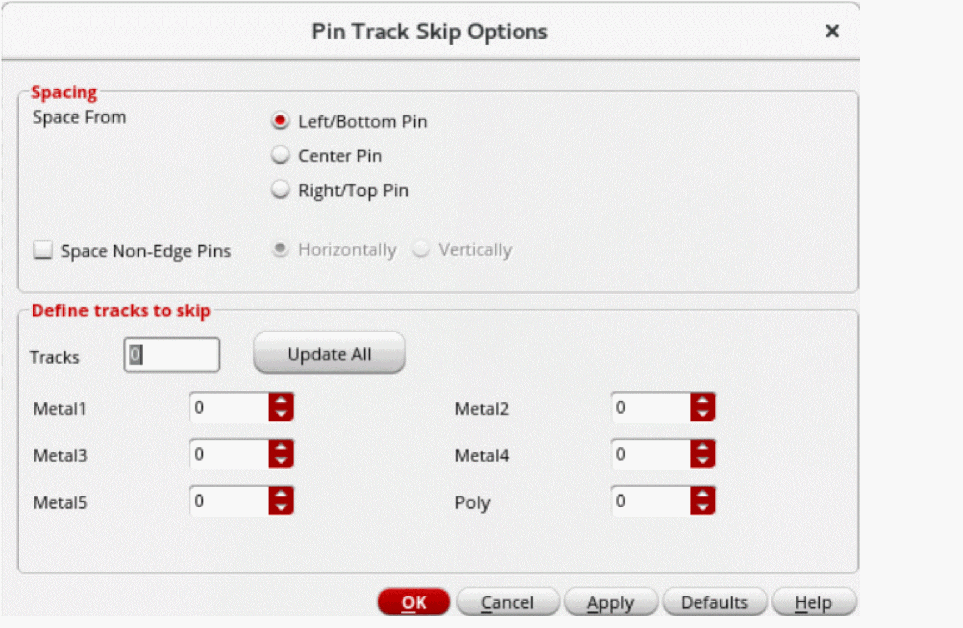

Specifying Pin Spacing Based on the Number of WSP Tracks
(Virtuoso Layout Suite EXL) When there are WSP tracks present in a design, instead of absolute values, you can specify pin spacing in terms of the number of WSP tracks to skip. This helps ensure that pins are correctly snapped to WSP tracks.
Before defining the spacing values, ensure that the design has WSP tracks.
To specify pin spacing in terms of WSP tracks:
- Open the Pin Tool.
-
Choose Place – Pin Spacing.
The Pin Track Skip Options form appears.
 - Select a reference pin from the Select From section.
- Select Space Non-Edge Pins to apply the specified skip track settings to all pins, irrespective of whether they are assigned to edges.
- Specify the direction in which the skip track values are to be applied for non-edge pins: Horizontally or Vertically.
- In the Define tracks to skip section, specify the number of tracks to skip in the Tracks field.
- Click Update All. The skip track value is applied to all layers listed in the form.
- Edit the number of skip tracks for individual layers as per your requirement.
- Click Apply or OK.
The specified skip track values are applied to the layers in the current design.
The reference pin remains in the same position. The remaining pins are spaced relative to the reference pin with the skip track value specified in the form.
In the following image, a skip track value of 1 is applied to all layers. The selected reference is Bottom.
Related Topics
Applying Uniform Pin Spacing Using the Pin Tool
Return to top